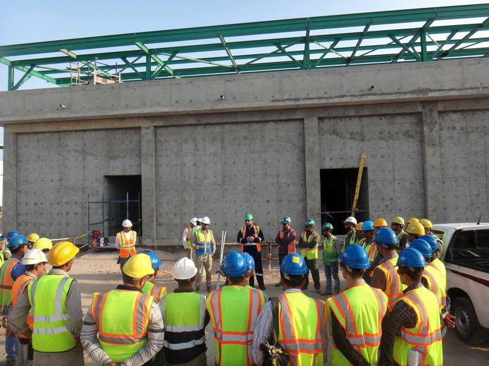
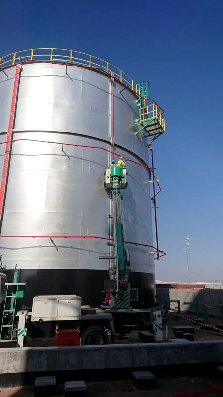
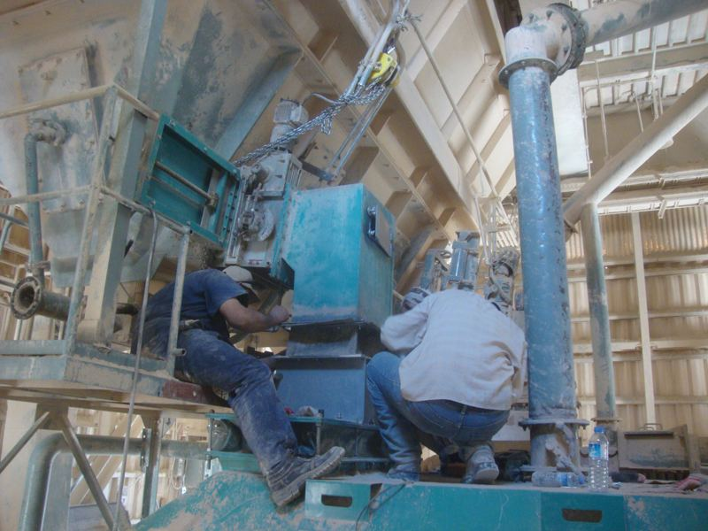
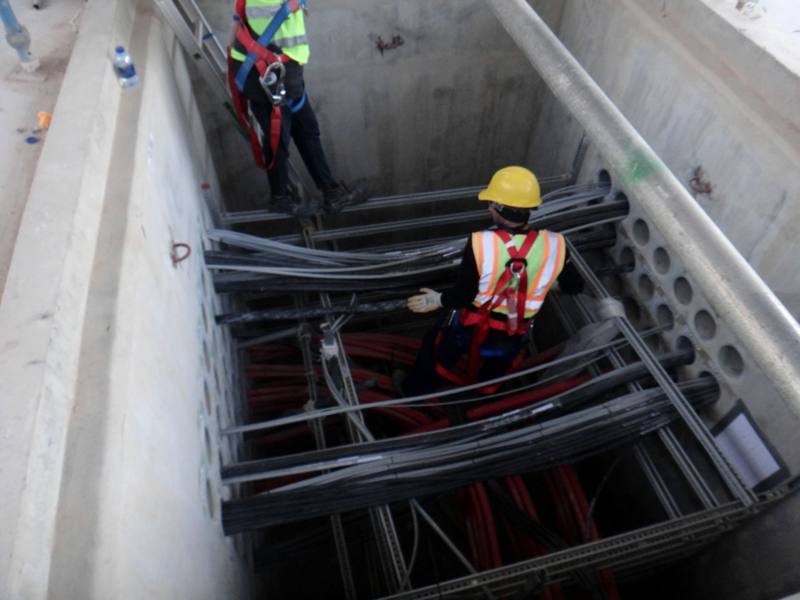
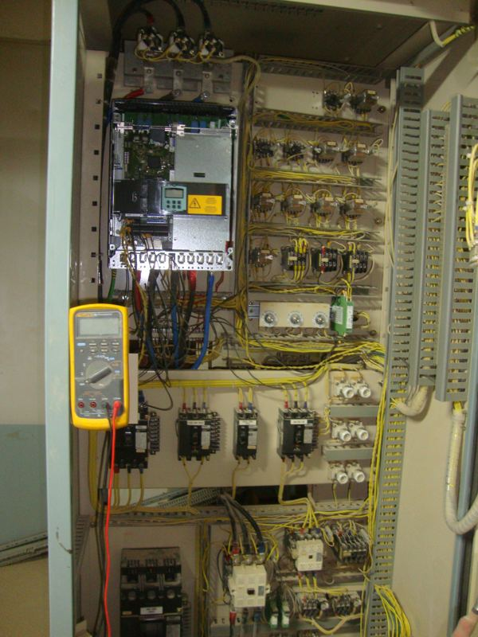
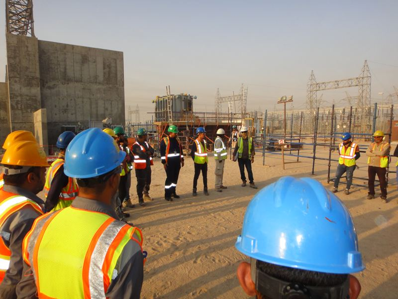

النفط والغاز2023–2025
مشروع تطوير مصفى البصرة (IBRU): الإشراف على نظام إنذار الحريق
إشراف موقعي بصفة المجهّز على نصب وفحص وتشغيل نظام إنذار الحريق في محطات ومباني المصفى، مع تدريب المشغلين.
مصفى البصرة، البصرة
مجموعة مختارة من مشاريع التحكم وأجهزة القياس وSCADA والسلامة في قطاعات الطاقة والنفط والغاز والإسمنت والمياه والمباني في العراق.
إشراف موقعي بصفة المجهّز على نصب وفحص وتشغيل نظام إنذار الحريق في محطات ومباني المصفى، مع تدريب المشغلين.
نظاما إدارة المبنى وإنذار الحريق لمصنع أدوية، مع نظام إنذار ضد التسلل على السياج المحيط.

هندسة وتوريد ونصب وتشغيل أنظمة التحكم والقياس على معالجات SIMATIC S7-400 الآمنة، مع برنامج محاكاة مباشر.

لوحات تحكم الوحدات وأجهزة القياس ومراكز التحكم بالمحركات وزلاجات غاز الوقود والقابلوات لثلاث مضخات تعمل بتوربينات AVON الغازية بقدرة 25 ميغاواط.

هندسة ونصب ودعم تشغيل نظام كشف وإنذار الحريق والغاز المتكامل مع الأنظمة الحرجة للمحطة.
تصميم وتنفيذ نظام متكامل لإدارة المبنى وإنذار الحريق والتحكم بالإنارة على منصة واحدة.
نظام متكامل لإدارة المبنى وإنذار الحريق والتحكم بالإخلاء لمستشفى، مع اختبارات وتحقق شاملة.

مراجعة الوثائق ومد القابلوات والفحص ودعم تشغيل نظام التحكم الموزع Emerson Ovation.

مراجعة الوثائق والتوصيل والفحص ودعم تشغيل نظام تحكم التوربينات GE Mark V.

نظام تسجيل بيانات متكامل لجميع وحدات التوليد الست والأنظمة المساعدة، مدمج مع البنية القائمة.

تصميم وتوريد ونصب وتشغيل أجهزة مراقبة التوربين لوحدتين حراريتين.

استبدال جميع معدات SCADA في المنطقة الوسطى لشبكة توليد ونقل الكهرباء في العراق.
تشغيل جميع معدات SCADA الجديدة في المنطقة الجنوبية.
تصميم وبرمجة ونصب وتشغيل وصلة ICCP TASE.2 بين مركزي تحكم.
127 موقع GSM: اختيار المواقع وتخطيطها، والإشراف المدني، والأعمال الكهربائية والتحكم، ونصب وتشغيل معدات الاتصالات.

تصميم ونصب وتشغيل نظام قياس المستوى بالرادار لسبعة خزانات وقود.
نصب وفحص وتشغيل لوحات تحكم الوحدات الجديدة وأجهزة القياس الحقلية والقابلوات لثلاث مضخات تعمل بالتوربينات الغازية.

تحديث جميع الموازين، ونظام مسوقات جديد للفرن والمبرّد، والتحكم الآلي بخلط الكسارات.

تأهيل ونصب وتشغيل موازين Schenck جديدة بسعة 250 طن/ساعة للأفران.

نظام تحكم ومسوقات وأجهزة قياس جديدة لآلتي التكديس والاستعادة.

تأهيل وصيانة وتشغيل نظام التحكم SIMATIC S7-300 لوحدة معالجة المياه.
صور مختارة من مشاريع سابقة.


